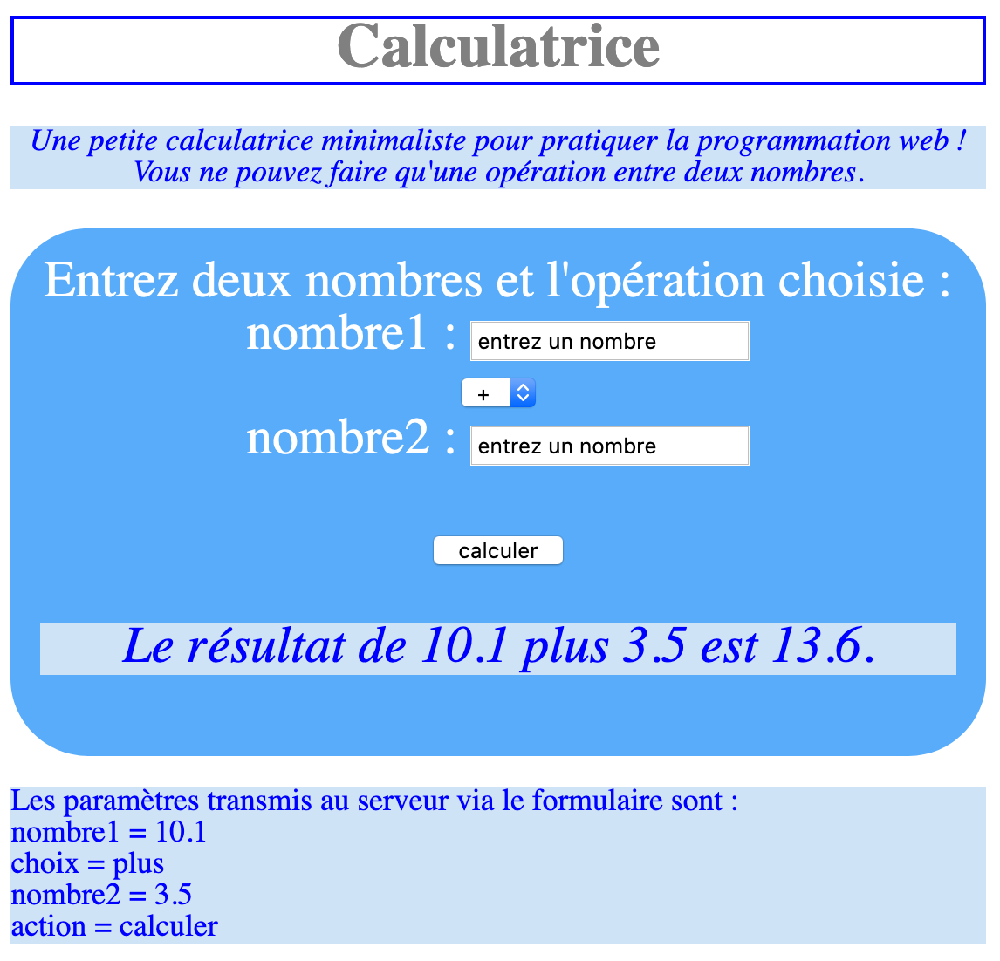

-
Mon GitHub

Grappl-ic
Contenu : Jeux vidéo
Type de jeux : Plateformer
Grappl-ic ? Kézako ?? Gappl-ic est un jeux 2D platerformer où le joueur doit faire usage d'un grappin afin de progresser dans son aventure.
⚠️ Ce projet à été fait sous une bibliothèque graphique développée pour les étudiants de l'Université Claude Bernard Lyon 1. Pour des raisons de légalité, lve code ne peut pas être partagé sur mon GitHub.
Ce projet est en cours de remastérisation pour être adaptée à la bibliothèque graphique SDL 2.Calculatrice
Langage utilisé : HTML, CSS, PHP
En quoi consiste ce projet ? Ce mini projet est déstinée envers un TP pour une matière orientée sur le développement web. Ce fut le premier projet qui nous a introduit au HTML, CSS et PHP.
